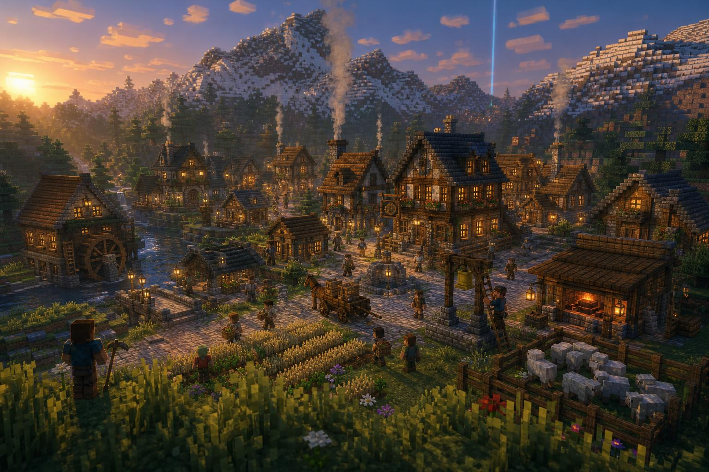
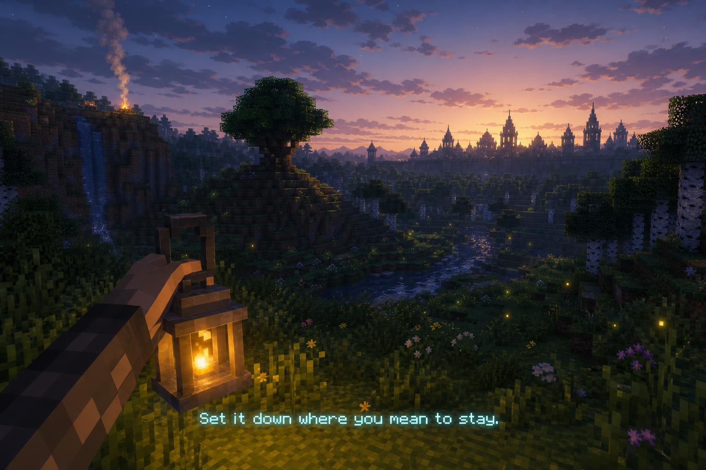
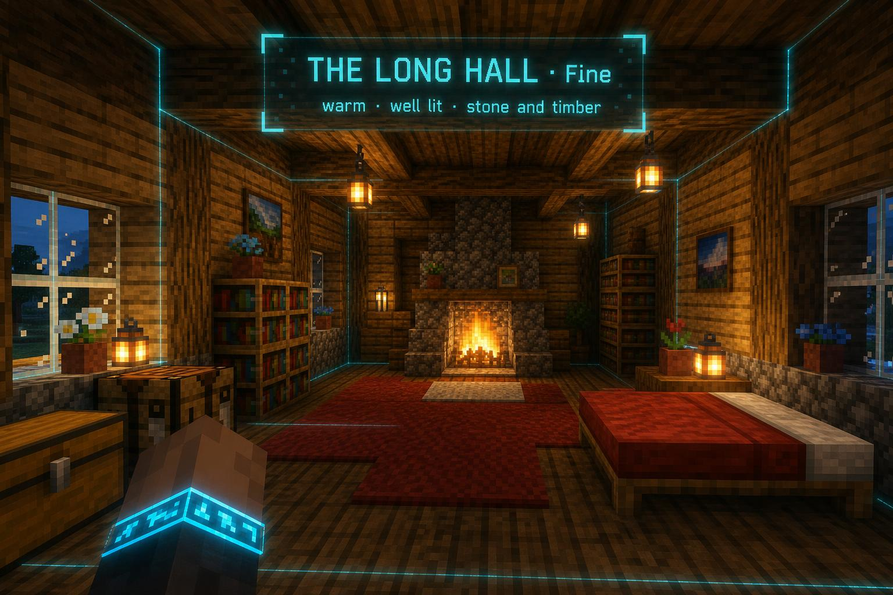
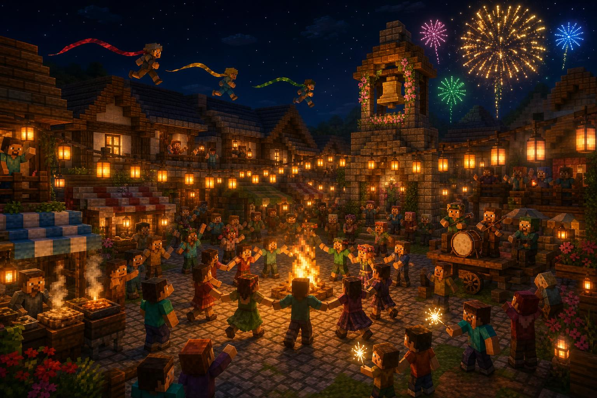
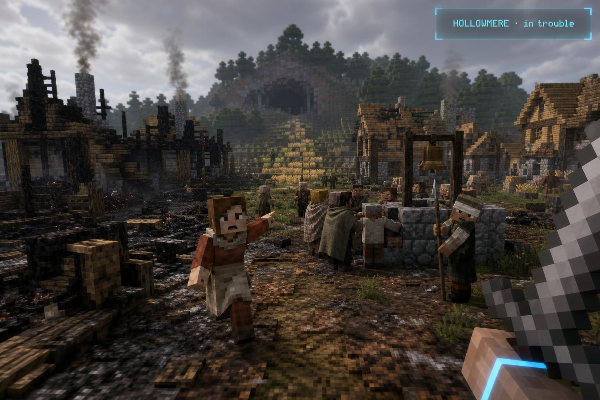
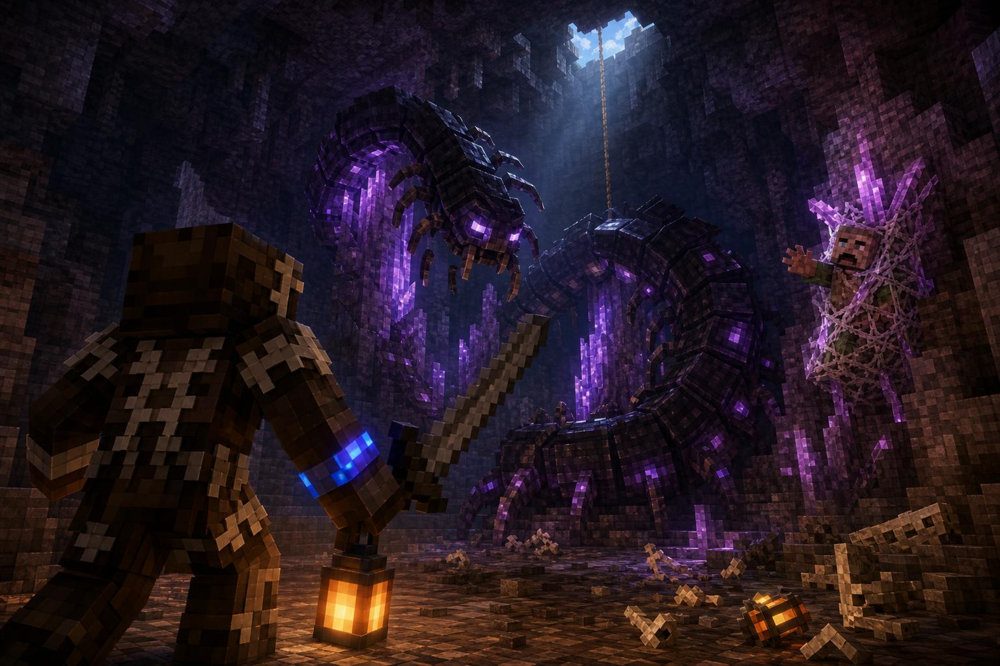
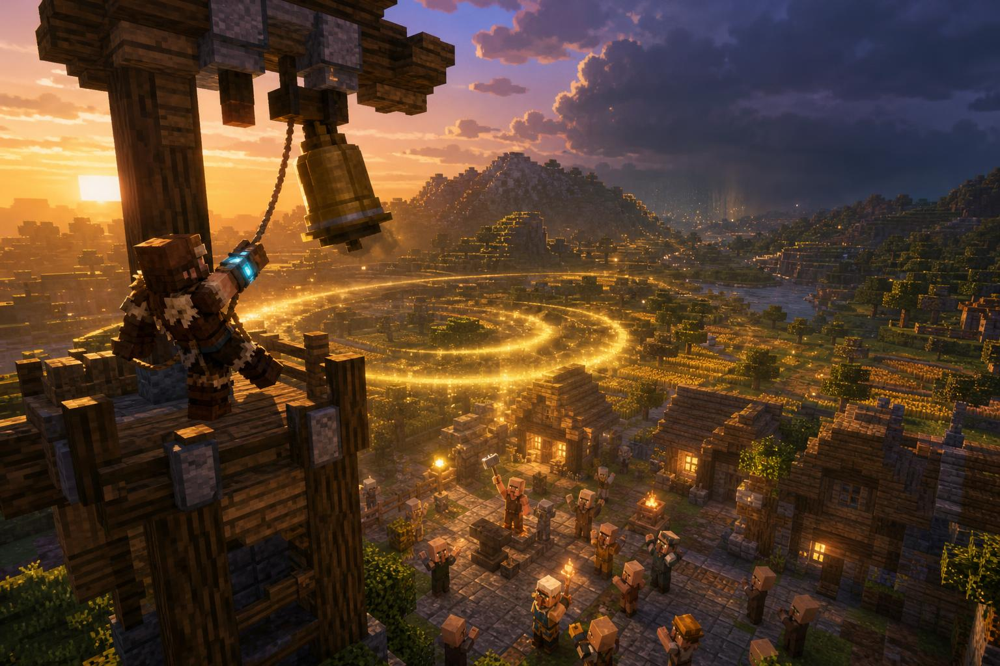
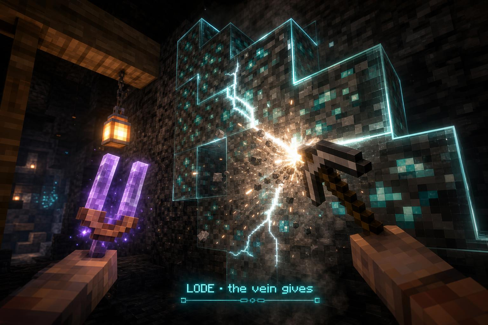
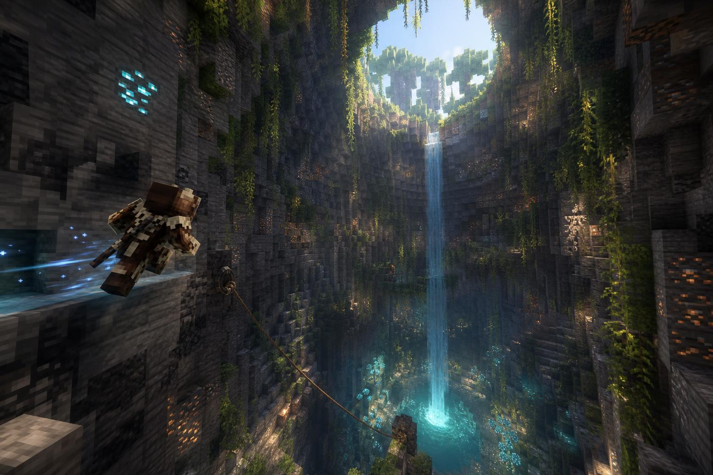

The gates give you power. The time between them should give you a life: a home that reads what you build, villages that live on Carillon's own logic and need you, and a deep underground that holds the metal everything is made from. Every ordinary Minecraft verb feeds one of those three, the movement system is how you get through all of them, and each one you touch changes something you can see.
"I still want it to feel like Minecraft, and for the things that you do in Minecraft to have sense and an objective and reasoning for doing them… Why would I go mining?… When you build your base, it kind of plays into the system of the hearth… I don't want fluff." Euan, 26 Oct 2026

Thirteen decisions, each with my recommendation. "Go with your recommendations" says yes to all of them.
It starts on your first evening with a coal from the camp's fire, and from then on every room you build is read, named and graded, and someone you saved can move into the spare one.
Hamlets to walled towns on the city's own engine: real jobs, real routes, every house different and walk-in. They get into trouble, and what you do about it changes them for good.
Every tier's metal is down there, in lodes that break open like an event, in caves built for how you move: sinkholes, old mines you wall-run through, seeps where the Deep leaks in.
Hide from the hunt. Light from the gates.
Gates alone can't make your gear, and neither can mining. E stays hide and bone, so the first hour is still never "go find iron".

Why you leave the city. One line from Bram, already true in code: "The bells hold the city. Hunters hold the wilds." A hunter's Hearth really does calm the land round it. Leaving isn't an errand; it's the job.

Every closed room inside your Hearth is read on six things, in the scan the Hearth already runs. Nothing asks for a block by name; only furniture names what a room is for.
| Reading | What counts |
|---|---|
| Closed | walls and a roof; doors, panes, fences, stairs and slabs close gaps |
| Light | how much of the floor is lit at night; windows by day |
| Warmth | a lit fire in or beside it: hearth, campfire, furnace, candles |
| Room to live | floor and height for what it's for; tall halls allowed |
| Made with care | worked blocks (planks, bricks, stripped logs, cut stone, tiles, glass), three kinds or more |
| Detail and comfort | trim in walls and ceiling, soft things; the best of each kind counts, ten rugs add nothing |
The grade (Bare, Snug, Fine, Grand) is held down by the weakest reading: a grand hall with one dark corner is Fine until you light it. Your home's Comfort sets how long you wake Rested: powers recharge a quarter faster, crafts learn a quarter faster.
| Room | Furniture in it | What it gives |
|---|---|---|
| Bedroom | a bed | yours: Rested on waking. A spare one: someone can move in |
| Kitchen | furnace or smoker, crafting table, barrel | meals made here last half again as long |
| Forge (today's Armory) | anvil, Forge, armour stand | the temper cap; Oren works here |
| Study | lectern, six bookshelves | Blueprints for half the paper; Teodor moves in |
| Greenhouse | farmland or pots under a glass roof | herbs ripen three times as often |
| Stable | hay, a fence gate | your mount comes home here; the whistle reaches twice as far |
| Hall | a big floor, six seats, a table | a meal here feeds everyone in it; your festival comes here |
| Bell tower | a bell, under a roof, high up | your own bell at dawn and dusk; breaks near home warned two days early |
| Lookout | high, windows on three sides | the Atlas fills in round your home; one more rumour a day |
| Mine head | a shaft 16+ deep under it | a miner works the shaft you dug and brings up its ore |
| and today's | Sanctuary, Trophy Hall, Barracks, Workshop | as today; the Workshop finally gives something |
Someone moves in when you know them (you finished their chain, rescued them, or you're a Friend in their village), a spare Snug bedroom stands, and their trade has its room. They walk up the road with a bundle on their back and live a real day on the city's engine. Hand Oren the metal and the hide and he forges the piece overnight; Hettie tends your fields and pens; a miner you saved works your shaft; Wren strings rope lines between your roofs, so your home becomes a course.
| Tier | Asks for | Opens |
|---|---|---|
| 0 Hearthfire | the Ember | respawn, rest, calm land |
| I Homestead | a Lord's Heart, a Snug bedroom | Oren, the guide |
| II Steading D | four rooms, one Fine; a field or pen; iron | two settlers |
| III Hall C | a Grand room; gold, amethyst | four settlers |
| IV Village B | a bell tower, four settlers; diamonds | named on the Atlas, caravans, your festival |
| V Town A | eight settlers; obsidian, a Lord's Heart | the trials at home |
Carillon's people engine becomes one engine with many places: each settlement its own ledger, street graph and saved state, all sharing one pool of bodies so a village never starves the city. Carillon becomes the first and largest settlement on it and nothing it does changes. A planner lays out each village on the land (streets that follow the contours, a green with the well and the bell, plots, fields, a mill on the water); the city's grammar paints it in the region's own materials; and, for the first time in AWAKEN, every house gets an interior, furnished from who lives there.
| Kind | Homes · people | How often | What makes it |
|---|---|---|---|
| Hamlet | 3-6 · 8-16 | one or two most regions | a green, a well, a bell post, fields |
| Village | 8-20 · 20-50 | one region in two | a smithy, an inn, a mill, a bell tower |
| Town | 25-45 · 60-120 | one region in five | walls and a gate, a market, the Watch, a scribe |
| Special | by land | rare | a mining town over its own mine; a fishing village on piers; Mire stilt houses; frost longhouses; a desert caravanserai; a woodcutters' camp |
The bell rings at dawn. Farmers walk to the strips, the woodcutter to the woodlot, the miner down the shaft, the hunter out with a spear, coming home at dusk with a carcass on a pole. Midday, everyone comes home to eat. The lamplighter does his round, the inn fills, the Watch walks the edge after dark, and chimneys smoke only when someone's in.



Every trouble has the same shape: a call you see or hear from afar, an ask from a person, a place, a deed, the return to the square, and a lasting change in the village's blocks and people. Each one comes from something real nearby (a camp that grew, a gate about to break, a beast's lair, the town's mine), never from a dice roll. At most one per village and two near you. Miss one and the world moves on without you, worse, but never to a dead end.
| Trouble | The call | The deed | What stays changed |
|---|---|---|---|
| Taken | the alarm bell at night | track them into the lair, fight, carry them out | the lair gone for good; they greet you by name and can move to your Hearth |
| The Burning | a rumour, scouts at the treeline, a day's warning | hold the square; join the bucket line when roofs catch | if missed, houses stay charred until rebuilt |
| The Rebuild | the elder at the well | bring timber, stone and iron; masons work three days | new houses with a beam of your colour; a family comes back |
| The Bell | the bell silent at dusk | take it back from the Unbound, or cast a new one and haul it up the tower | a ring of light over the land; breaks warned early; blight kept off |
| Gone Missing | lanterns searching at dusk | a night search: a ledge, a shaft, a cave | a keepsake; Friend standing |
| The Grey Fields | "It breaks in two days" | close that gate in time | nothing happens (the best ending), or grey fields and Hollowed people you cure |
| The Deep Mine | the mine bell | go down the town's mine and bring the miners up | the mine reopens and sells you lode maps, or is sealed for good |
| The Festival | lanterns and music at dusk | the rooftop race, the fishing and cooking contests | prizes; settlers decide to come home with you |

Villages grow. Troubles solved, trade and what you deliver raise a village's prosperity, and when it's high enough it builds: scaffolding goes up on a fenced plot, masons work it for two or three days, a cart brings a new family. A hamlet you looked after can be a village by the time you're C-rank.
Nobody does this yet. The mod research looked across about sixty village, structure and pack projects: none has a village burn and be rebuilt over days, or someone taken to a lair and brought back, with the place remembering.
| Tier | Its metal | Where | The feeling |
|---|---|---|---|
| E Wildhide | none: hide and bone | — | the start stays free |
| D Beastbound | iron | any cave, any hillside | your first real dig |
| C Gatewrought | diamond | below y 0, best in lodes | diamond finally means C-rank gear |
| B Veilwoven | amethyst and Deepglass | geodes; seeps | resonance and the Veil |
| A Lordscale | netherite | the Nether | the Nether finally has a reason |
| S Sovereign | starmetal | the cores of fallen stars | you chase stars across the night |
| Ore | Its job (new in bold) |
|---|---|
| Coal | fuel; a coal per temper at the Forge |
| Copper | the Anchor, circuits; bell bronze, the Tuning Fork, the miner's lamp |
| Iron | D-tier's metal, pitons, the rope's first fitting; the Forge, tempering |
| Gold | the power's metal: every power focus from D up; tempering |
| Lapis | ink: Blueprints, lode maps, treasure maps |
| Emerald | money |
| Diamond | C-tier's edge; tempering, Anchor IV-V |
| Amethyst | B-tier, bell bronze, the Tuning Fork |
| Sunshard, Frostspar, Fault Seam | attunement catalysts (Heat, Frost, Gravity): every region has a stone worth going for |
Lodes. Big natural veins, 20-120 blocks of one ore along a cave wall or through rock, with a heart at the centre. They glint in lantern light. One lode beats an hour of branch mining, so the reason to explore caves instead of strip-mining is built into the rock. Vanilla's scattered ores stay as they are.
Two new ores. Deepglass grows where the Deep presses into the caves below y 0: it hums, the Veil sees it from far off, and it needs a diamond edge. Starmetal is the core of a fallen star, cut out while it cools before its guardian rises.
The handouts stop. Gates pay essence, cores, parts and gear, not raw ore. The market stops selling diamonds. A chore only earns its place if it pays something you can't get another way.

| Tool | What it does |
|---|---|
| Tuning Fork | strike it on stone and the chime climbs in pitch as you turn toward the lode you tuned it to. Prospecting by ear |
| Pitons and rope | a rope hangs 32 blocks from any lip, climbable before you have the Tether, and by people you're bringing out |
| Miner's lamp | light drawn on the rock ahead, so a lode's glint shows |
| Rope fittings | iron reaches further, gold reels faster, Deepglass pays out smoothly for the rappel |

Minecraft's caves are good and every player knows how to read them, so AWAKEN keeps the generator and puts places in it, carries the city's climbing language underground (the movement system works on natural rock, but wall-runs need flat walls caves never have), and adds the senses it lacks. Every place has a route that never needs the rope; the rope buys the shortcuts and the treasure.
| Place | What it is | How you move | What it holds |
|---|---|---|---|
| Sinkhole | a shaft 40-110 deep from the surface into the caves, a waterfall into a pool, a grotto at the bottom | ledge rings and vines (E); the dive; rope off any wall (D) | a lode |
| The Delvers' mine | the old workings of the people who dug Carillon's bell metal: galleries, timber shafts, rail inclines, rope bridges | real wall-runs underground on the cut walls; a minecart ride down; slides under collapses | lode maps, a Delver's log, an old pick; the logs say they dug too deep |
| Seep | below y 0, where the Deep presses in: violet-black rock, Deepglass spires, muffled sound, a hum | ruined galleries, crystal spires, a vent | Deepglass, a Hollows nest, the seep's heart |
| Chute | an old ore chute of stair-cut steps, or ice | the stair slide you already have: 60 blocks down, out over a lake | the fun way down |
| Grotto | behind a waterfall, a glowing pool, a geode you climb inside | climbs and dives | region secrets, a legendary fish |
| Lairs | the Crystal Nest finally joined to the caves; a Hollows den; a beast's cave under a hill | the arena's own ledges | where the Taken are |
| Vents | hot air over magma in lava tunnels and sulfur caves | glide up, refill Aether | the C-rank way up a great cavern |
| Moment | Today | After |
|---|---|---|
| Leaving Carillon | an errand to a camp, then a forest | the errand ends at dusk with a coal from the camp's fire |
| Night one | dig a hole, wait | find your ground, set the Ember, build a shelter; the Hearth names it |
| Your base | invisible to AWAKEN until a Lord's Heart, then a checklist | every room read, named and graded; people move in when there's a bed |
| A village | nodding traders, nothing happens | a hamlet at work; it can burn, lose someone, ring again |
| Finding diamonds | worth a lump of coal; gates hand them out | C-rank gear is made from them; a diamond lode breaking open is an event |
| A cave | vanilla noise; little for the movement system to grip | a sinkhole with a route down, a mine you wall-run through, a seep that hums, a way home |
Crimson Desert's own critics fault it for opening too many systems at once. This plan opens its verbs one or two at a time, spread through the D and C bands where the pacing sims found the long empty stretches.
Every idea had to answer: why would a player do this, what does it give them, how does it feel the first time, and does it still feel like Minecraft?
| Idea | Verdict | Why |
|---|---|---|
| Roads and inns between the city, the camp and the settlements, with caravans walking them | IN · W7 | the world joins up; following a road to a village you didn't know is a classic Minecraft moment |
| The emerald economy | IN · W3 | every surplus gets a use and every region a reason |
| Your home as a course: Carillon's climbable kit craftable, Wren's rope lines, the Training Grounds' ghost on your own route | IN · W6 | the thing you loved most about the movement, at home |
| Fishing spots: a legendary fish in named waters and grottos; the festival contest | IN · W4, W5 | small, data, uses the Fishing craft |
| Crafting draws from nearby chests at home | IN · W1 | the cheapest quality-of-life win in every base game |
| A hound from a village kennel that follows tracks | LATER | lovely, but one more verb in the first week |
| The Atlas below: the caves you've walked, drawn under your feet | LATER | big client work; the depth on the lair line and the way home come first |
| Seasons, temperature, thirst | CUT | friction that pays nothing you can't get |
| Relationships, marriage, families | CUT | a game of its own; people get routines and a few arcs |
| Colony management (worker trees, research, logistics) | CUT | MineColonies' 45 worker types is a second game; settlers do one job each |
| Vein-mining a whole vein in one swing | CUT | it kills the strike; the lode's heart is the better version |
| Phase | Scope | Effort | It proves |
|---|---|---|---|
| W1 The carried flame | the Ember, Tier 0, the reading and grades, the room glance, Comfort and Rested, room kinds, the fixes | 3-4 h | a hand-built shelter is read, named and graded |
| W2 Metal from the deep | tier metals, handouts trimmed, ore XP, lodes and hearts, the strike, the Fork, pitons, Deepglass, starmetal, bell bronze | 4-6 h | a lode breaking open is an event; every ore has a job |
| W0 Many settlements | the people engine per place, one body pool (with Carillon) | 2-3 h | Carillon unchanged, a second place ticking beside it |
| W3 Living villages | the planner, styles by biome, interiors, village jobs, emerald trade, standing, the first hamlet | 8-12 h | a hamlet at dusk; every house walk-in |
| W5 Caves worth entering | sinkholes, mines, seeps, chutes, grottos, lairs, vents; the rappel; sound, light, the way home | 6-9 h | each place climbed with every move; a route without rope |
| W4 Troubles | the eight troubles, growth, the calm-villages option | 5-7 h | a village burned, rebuilt and remembering you |
| W6 Your village | settlers and their work, tiers that grow from the home, the named village, the climbable kit | 3-5 h | someone you saved moves into the room you built |
| W7 Roads and towns | roads and inns, caravans on them, walled towns, mining towns over their mines | 6-10 h | the world joined up |
W1 and W2 run first as two builders at once (different code). Then W0 and W3 with Carillon, with W5 alongside; W4 and W6 after; W7 last. About 37-56 builder hours, two to three days of wall-clock. Every phase: one GameTest per mechanism, CI for the rest, one screenshot tour judged against the look bar (our own particles, sound and light, never vanilla's reused). Opus at extra-high effort for anything that decides the look or feel.